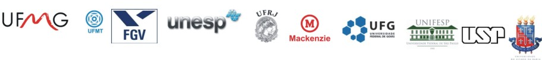

CONFIRA AS NOVAS PESQUISAS SOBRE AS UNIVERSIDADES BRASILEIRAS

CLIQUE NOS LINKS ABAIXO E SE DIVIRTAM-SE
Univesidades do Estado de São Paulo
USP A maior Universidade da América Latina
Desde 1910: Fundada Pelo Estado de São Paulo.
UNICAMP Universidade conceituada Mudialmente e na América Latina
Desde 1930: Fundada pelo Estado de São Paulo.
UNESP Univerdiade Estadual de são Paulo
Desde 1950: Fundada pelo Estado de São Paulo.
FGV Faculdade Getúlio Vargas de são Paulo
Desde 1954: Fundada pelo Estado de São Paulo.
UNIFESP Universidade Federal do Estado de São Paulo
Desde 1955: Fundada pelo Governo Federal,Dentro do Estado de São Paulo.
MACKENZIE Faculdade Pesbeteriana de são Paulo
Desde 1953: Fundada pela Igreja Pesbeteriana do Estado de São Paulo.
Univesidades de Outros Estado do Brasil
UFRJ Univerdiade FEDERAL DO RIO DE JANEIRO
Desde 1935: Fundada pelo Estado Do Rio de janeiro.
UFMG Univerdiade FEDERAL DE MINAS GERAIS
Desde 1902: Fundada pelo Estado de Minas Gerais.
UFMG Univerdiade FEDERAL DO MATO GROSSO
Desde 1922: Fundada pelo Estado do Mato Grosso.
UFMG Univerdiade FEDERAL DA BAHIA
Desde 1925: Fundada pelo Estado da Bahia.
Pagina Principal
pesquisa@universidade.com.br
E-mail